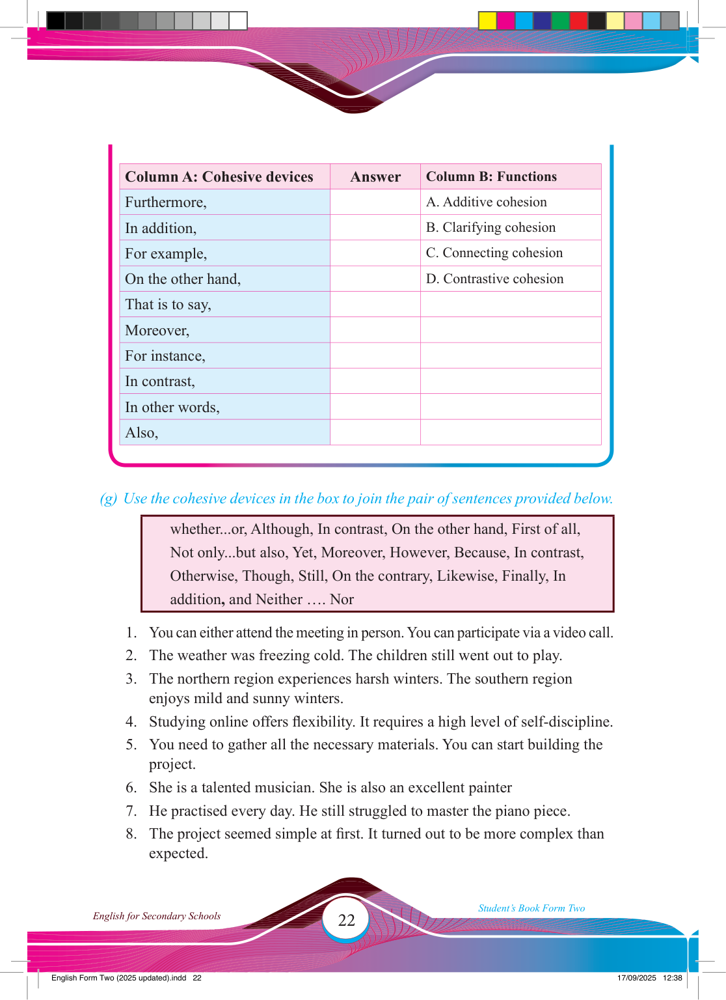

Column A: Cohesive devices
Answer
Column B: Functions
Furthermore,
A. Additive cohesion
In addition,
B. Clarifying cohesion
For example,
C. Connecting cohesion
On the other hand,
D. Contrastive cohesion
That is to say,
Moreover,
For instance,
In contrast,
In other words,
Also,
(g) Use the cohesive devices in the box to join the pair of sentences provided below.
whether...or, Although, In contrast, On the other hand, First of all,
Not only...but also, Yet, Moreover, However, Because, In contrast,
Otherwise, Though, Still, On the contrary, Likewise, Finally, In addition, and Neither …. Nor
1. You can either attend the meeting in person. You can participate via a video call.
2. The weather was freezing cold. The children still went out to play.
3. The northern region experiences harsh winters. The southern region enjoys mild and sunny winters.
4. Studying online offers fl exibility. It requires a high level of self-discipline.
5. You need to gather all the necessary materials. You can start building the project.
6. She is a talented musician. She is also an excellent painter
7. He practised every day. He still struggled to master the piano piece.
8. The project seemed simple at fi rst. It turned out to be more complex than expected.
17/09/2025 12:38